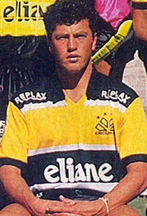

Jogadores
Itá

Antônio Luiz Sartoretto, mais conhecido como Itá (Itá, 14 de abril de 1962) é um ex-futebolista brasileiro. Era lateral esquerdo.
Jogador
Começou a sua carreira nas categorias de base da Chapecoense em 1983 aos 21 anos de idade. Transferiu-se para o Criciúma em 1989, aonde conquistou 5 títulos estaduais e a Copa do Brasil de 1991. Em 1997 foi para o Avaí aonde se transformou rápido num dos ídolos e líderes do time e conquistou o título estadual de 1997. Em 1998 anunciou o fim de sua carreira no próprio Avaí e assumiu um cargo de dirigente de marketing dentro do clube. No final do ano, voltou a traz e atuou no Fraiburgo. Logo após encerrou sua carreira de jogador de fato. Em 1999 assumiu o cargo de gerente de futebol do Criciúma.
Treinador
Em 1999, voltou a atuar como jogador no Fraiburgo mas também assumiu a função de treinador do time. Em 2001 assumiu o Caxias de Joinville, desta vez somente como técnico.
Jairo Lenzi

Jairo Jair Lenzi, mais conhecido como Jairo Lenzi (Barra Velha, 22 de junho de 1968), é um ex-futebolista brasileiro que atuava como Ponta-esquerda.
Carreira
Driblador, veloz e com um "chute venenoso", Jairo Lenzi começou em 1985, no Marcílio Dias, e quatro anos depois foi levado ao Criciúma por Levir Culpi. Devido às boas atuações na campanha do Criciúma na Libertadores de 1992, o técnico da seleção brasileira, Carlos Alberto Parreira, chegou a cogitar convocar o ponta em maio daquele ano, mas ele acabaria nunca tendo uma chance com a camisa amarela. Finda a participação na Libertadores, foi emprestado ao Grêmio e, em seguida, ao Internacional, mas não foi bem em nenhum dos dois clubes e voltou ao Criciúma antes do Campeonato Brasileiro de 1993.
Roberto Cavalo
Roberto Fernando Schneiger, ou simplesmente Roberto Cavalo, (Carazinho, 13 de abril de 1963) é um ex-futebolista brasileiro que atuava como volante e tornou-se treinador de futebol em 1997. Roberto Cavalo era um jogador que tinha como principais qualidades o bom poder de marcação e os chutes de fora área. Também era um exímio cobrador de faltas.
Jogador
Como jogador, Roberto Cavalo atuou também no América de Rio Preto e no Bahia. Ele brilhou no Vitória, equipe na qual foi vice-campeão brasileiro de 93 (perdeu para o Palmeiras na final). Também conquistou o título de Campeão da Copa do Brasil, em 1991, pelo Criciúma, tornando-se até hoje ídolo daquela torcida.
Treinador
Roberto Cavalo decidiu por ser treinador em 1997. Trabalhou no Avaí, onde foi campeão da Série C e campeão catarinense. Já em 2004, fez brilhante campanha na Campeonato Brasileiro da Série B tendo sido um dos quatro finalistas (terminou num honroso terceiro lugar). Em 2007 assumiu o Gama, levando-o às oitavas-de-final da Copa do Brasil. Em meio a uma crise, deixa o Gama em setembro do mesmo ano para assumir o Criciúma sendo no começo do ano de 2008 técnico do América de Natal. No dia 25 de maio retornou ao Gama permanecendo por dois meses no clube, pedindo demissão ao não chegar a um acordo com a diretoria para um aumento salarial. Ainda em 2008 assumiu o Bahia, em substituição ao técnico Arturzinho que foi demitido anteriormente. e estava dirigindo Associação Desportiva Confiança de Sergipe. No dia 11 de setembro de 2009, foi anunciado como novo comandante do Paraná Clube no dia 18 de dezembro de 2009, foi anunciado como novo técnico do Mixto Esporte Clube para o ano de 2010.treinou o Vila Nova, do estado de Goiás, disputando Campeonato Brasileiro da Série B. Novamente Cavalo voltou ao Paraná Clube substituindo Marcelo Oliveira. Em 2011 treina o Vila Nova e faz péssima campanha derrubando o time para o Campeonato Brasileiro da Série C e consequentemente é demitido. Em 2012 assumiu o Oeste.
Ronaldo Fenômeno
Ronaldo Luís Nazário de Lima, mais conhecido como Ronaldo, Ronaldo Fenômeno ou simplesmente Fenômeno (Rio de Janeiro, 22 de setembro de 1976), é um empresário e ex-futebolista brasileiro que atuava como atacante, amplamente reconhecido como um dos melhores futebolistas de todos os tempos. Atualmente é presidente do Real Valladolid, da Espanha[4] e sócio-proprietário do Cruzeiro, do Brasil.
Jogador
Ronaldo é frequentemente considerado como um dos melhores jogadores de todos os tempos, alguns o colocando como o melhor "camisa 9" da história. Apelidado de Fenômeno (o fenômeno, em tradução livre) pela imprensa italiana, ele era um prolífico goleador e, apesar de ser um centroavante, tinha a capacidade de distribuir assistências para seus companheiros graças a sua inteligência, visão de jogo e habilidade em passes. O brasileiro era um jogador extremamente rápido e técnico, com excelente movimentação, capacidade para driblar adversários e finalizar jogadas.
Garrincha
Manoel Francisco dos Santos, o Mané Garrincha ou simplesmente Garrincha (Magé, 28 de outubro de 1933 — Rio de Janeiro, 20 de janeiro de 1983) foi um futebolista brasileiro que se notabilizou por seus dribles desconcertantes, sendo considerado por muitos o mais célebre ponta-direita e o melhor driblador da história do futebol. Mundialmente reconhecido como uma figura lendária no esporte, ele é extremamente popular entre os amantes do futebol no Brasil, onde os fãs mais antigos o consideram melhor até do que Pelé.
Jogador
Garrincha é amplamente conhecido por seu notável controle de bola, imaginação, habilidade de drible e finta, além de sua capacidade de criar chances do nada. Ele também possuía um chute forte com ambos os pés e era um especialista em bolas paradas, conhecido por cobranças de falta e escanteio de trivela (com a parte de fora do pé). No entanto, era por suas habilidades de drible e finta que ele era mais famoso, uma habilidade pela qual ele manteve ao longo de sua carreira. Em relação à capacidade de drible de Garrincha, o escritor de futebol Scott Murray comentou ao escrever para o The Guardian em 2010: "... os resultados são incontestáveis: Garrincha foi o maior driblador de todos os tempos".